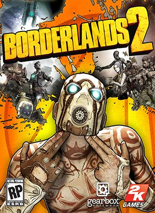

Borderlands 2 21.9 GB
Género: Acción, Mundo abierto, Looter Shooter
El juego se sitúa 5 años después de su anterior título Borderlands.
Jack el guapo, antagonista principal, ha tomado la corporación Hyperion, y se
ha
autoproclamado dictador de Pandora tras haber encontrado "La Cámara". El
nuevo grupo viaja en tren en busca de La Cámara. Pero resulta ser una trampa
de Jack pues quiere eliminar a todos los buscadores de la cámara, y el vagón
donde viajaban resulta ser un vagón lleno de explosivos...